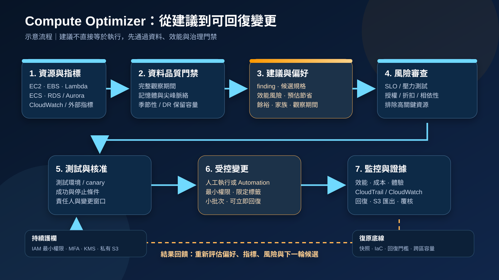

AWS Compute Optimizer：資源規模建議與安全治理
AWS Compute Optimizer 分析 AWS 資源組態與使用指標，產生適型化、效能與閒置資源建議。建議不是免審核的變更命令；可靠落地仍需要完整指標、工作負載脈絡、效能風險驗證、權限分離、變更窗口與回復程序。
作者：Dr. William｜查閱與發布：2026-11-16
服務定位
AWS Compute Optimizer 以 Amazon CloudWatch 指標、資源組態與支援的定價資訊，判斷資源是否最佳化、過度配置、配置不足或閒置，並提供近期與預估使用量圖表、效能風險及候選規格。支援範圍會隨服務更新，應以查閱日官方 supported resources 文件為準。
Cost Explorer 回答「費用花在哪裡」；Budgets 管理門檻與通知；Cost Anomaly Detection 找出異常支出；Compute Optimizer 則回答「目前規格是否貼近實際需求」。Auto Scaling 依即時或排程需求調整容量，Compute Optimizer 不取代 Auto Scaling、壓力測試、容量規劃或架構審查。
核心概念與服務邊界
分析與建議
- Opt in：啟用後建立 service-linked role，讓服務讀取必要資源組態與 CloudWatch 指標。
- Lookback period：預設以近期資料分析；付費進階指標可延長觀察期間。
- Finding：以最佳化狀態、閒置狀態或不可用原因呈現分析結果。
- Recommendation options：列出候選規格、預估價格、效能風險與預估使用量。
- Preferences：可調整 CPU／記憶體餘裕、門檻、觀察期間、執行個體家族與 Graviton 偏好。
- External metrics：適用時可納入外部可觀測平台的 EC2 記憶體指標。
治理與執行
- 組織視角：管理帳號或 delegated administrator 可在授權範圍內檢視成員帳號。
- Recommendation export：可將 CSV 與 JSON metadata 匯出至指定的私有 S3 bucket。
- 人工變更：多數建議須在對應服務中完成規格調整、停止、刪除或遷移。
- Automation：支援的 recommended actions 可直接套用或以規則排程執行，必須另設嚴格護欄。
- 證據鏈：保存建議、核准、測試、變更、監控與回復結果，才能證明最佳化有效。
- 建議時效：資源行為、價格、折扣與偏好改變後，舊建議可能不再適用。
Compute Optimizer 依可觀測到的資料計算。未發布的記憶體指標、低頻尖峰、月底批次、災難復原容量、授權限制、延遲 SLO 與業務成長計畫若未納入驗證，縮小規格可能造成效能或可用性風險。
適合與不適合的使用情境
適合
- 盤點 EC2、Auto Scaling、EBS、Lambda、ECS on Fargate、RDS／Aurora 等支援資源的適型化機會。
- 找出長期低使用、閒置或規格與工作負載不匹配的資源。
- 比較候選規格、預估節省與效能風險，建立變更優先序。
- 跨帳號、跨區域彙整最佳化機會，提供 FinOps 與平台團隊共同審查。
- 將建議匯出至私有 S3，建立歷史趨勢、核准與稽核證據。
- 對低風險、可回復且已標記的動作建立受控自動化。
不適合或不能單獨完成
- 直接把最低成本候選視為正式環境的唯一正確規格。
- 取代壓力測試、故障演練、容量模型、SLO 或應用程式效能監控。
- 在資料不足、季節性尚未涵蓋或指標缺漏時自動縮容。
- 保證 Reserved Instances、Savings Plans、軟體授權或資料傳輸的最終節省。
- 把建議匯出到公開 S3，或以長期 Access Key 交給外部分析工具。
- 未定義排除標籤、維護窗口、回復條件與責任人就啟用 Automation。
示意故事案例：電商 API 的保守適型化
以下為示意案例，不代表特定企業或正式部署。 一家電商以多個 AWS 帳號分隔正式、測試與資料平台。平台團隊發現部分 EC2 與 RDS 資源長期低使用，但正式環境每月有一次結帳尖峰，年底活動也會提高流量。團隊先在 Organizations 設定 delegated administrator，再以唯讀角色檢視跨帳號建議。
團隊沒有直接套用最便宜規格，而是先確認 CloudWatch 指標完整、記憶體資料已納入、觀察期間涵蓋月底批次，並以 recommendation preferences 保留 CPU 與記憶體餘裕。候選變更先在測試環境執行壓力測試，再於一小部分正式資源進行 canary，持續比較延遲、錯誤率、排隊深度、資料庫連線與成本。
通過驗證的變更才進入核准窗口；失敗即依預定門檻回復。Recommendation export 交付至私有 S3，保留建議快照、核准單與結果。Automation 只允許低風險且有明確標籤的 EBS 動作，高關鍵性與災難復原資源以排除標籤隔離，避免演算法建議跨越業務可用性邊界。

建置與運作流程
- 定義最佳化目標、資源範圍、資料擁有者、風險分級與不得變更的業務邊界。
- 確認 Organizations 管理帳號、delegated administrator、帳號與區域涵蓋方式。
- 以 IAM Identity Center／聯合身分、MFA 與短期憑證授予 opt in、唯讀、偏好管理、匯出及 Automation 分離權限。
- 啟用 Compute Optimizer，確認 service-linked role 與 trusted access 符合組織政策。
- 盤點支援資源及其 metric requirements，確認 CloudWatch 指標連續且涵蓋典型與尖峰週期。
- 適用時部署 CloudWatch Agent 或外部可觀測整合補足 EC2 記憶體資料。
- 設定 recommendation preferences，包括觀察期間、CPU／記憶體餘裕、門檻、家族與 Graviton 偏好。
- 按帳號、區域、服務、環境、擁有者、風險與節省機會分群建議。
- 檢查 finding reason、效能風險、候選規格、預估使用量與定價假設。
- 以 SLO、壓力測試、事件紀錄、排程批次、季節性與災難復原需求補充服務看不到的脈絡。
- 將低風險候選放入測試或 canary，設定前後比較基準與明確回復門檻。
- 經技術、服務擁有者、FinOps 與變更管理核准後，在維護窗口執行。
- 持續監控 CloudWatch 指標、應用程式遙測、成本與使用者體驗，失敗時立即回復。
- Recommendation export 僅交付私有 S3，限制 bucket policy、prefix、SourceArn 與 SourceAccount。
- 若啟用 Automation，先定義排除標籤、範圍、頻率、動作類型、最大變更量與人工覆核點。
- 以 CloudTrail 記錄偏好、匯出、Automation 與相關資源管理活動，透過 CloudWatch／EventBridge 告警未核准操作。
- 保存建議、測試、核准、執行、結果與回復證據，定期重新驗證偏好及資源範圍。
成本、可用性與維運考量
Compute Optimizer 的預設建議不另收服務費，但相關 CloudWatch 指標、進階監控、S3 匯出、CloudTrail、KMS、外部可觀測平台與變更後資源仍可能產生費用。Enhanced infrastructure metrics 是付費功能；2026-11-16 查閱的官方定價頁列出適用資源按執行小時計費，正式採用前應重新查閱所在區域與最新價格。
建議通常需要累積足夠指標，分析結果不保證即時。預設 14 天可能看不到季度、年度活動或罕見故障負載；延長至 93 天仍不能取代長期容量模型。Recommendation export 也可能需要時間完成，跨區域與資源類型有獨立工作與目的地限制。
縮容帶來的節省必須扣除測試、遷移、停機、授權、資料傳輸、快照、工程工時與回復成本。可用性評估應同時檢查多可用區容量、Auto Scaling 上下限、資料庫連線、儲存 IOPS／throughput、Lambda concurrency、容器資源限制與災難復原保留容量。
AWS Compute Optimizer 特有資安風險與控制
- 建議被誤當命令：所有變更先經工作負載擁有者、SLO、測試、核准與回復門禁；高關鍵資源不得只憑節省估算縮容。
- 指標盲區：確認記憶體、應用延遲、佇列、連線、批次與季節性資料完整；資料不足時維持原規格或延長觀察。
- 跨帳號可見性過大：delegated administrator 與檢視角色依 IAM 最小權限授權，搭配 SCP、permission boundary 與定期 access review。
- 長期憑證：人員使用聯合身分、MFA 與短期憑證；工作負載使用角色，不建立長期 Access Key。
- Service-linked role 濫用或遺留：監控角色建立與政策變更；停用服務後依官方程序處理不再需要的角色。
- Automation 擴大變更半徑：將查看建議、建立規則、核准與執行權限分離；限制支援動作、標籤、區域、排程與最大批次。
- 錯誤刪除 EBS：只對明確標記、已驗證無依賴且可回復的未掛載磁碟套用；核對快照、IaC drift、保留期限與復原演練。
- 公開匯出：S3 bucket 不得公開，啟用 Block Public Access、停用 ACL、限制 prefix、SourceArn、SourceAccount 與讀取主體。
- KMS 邊界錯置：Recommendation export 使用符合分類要求的 SSE-S3 或 SSE-KMS；若使用客戶管理金鑰，限制 key policy、grant 與跨帳號解密。
- 敏感標籤與自由文字：不得把客戶資料、credential、Access Key、Secret Key、Token、密碼、cookie 或含認證資訊的 URL 寫入標籤與名稱欄位。
- 第三方外部指標：外部可觀測平台的整合、資料範圍、帳號層級選擇、停用與供應商風險須獨立審查。
- 網路與管理面：工作負載資料面維持私有子網路與必要安全群組；管理 Compute Optimizer 的人員與自動化從受控環境呼叫 AWS API，限制未授權網路出口與主體。
- 機密管理：自動化若需要外部整合機密，存於 Secrets Manager／Parameter Store 並輪替，不寫入程式碼、標籤、規則名稱或日誌。
- 稽核不足：以 CloudTrail 記錄 enrollment、偏好、匯出、Automation 與資源變更，透過 CloudWatch／EventBridge 告警未核准操作。
- 復原準備不足：變更前保留必要快照、設定與 IaC 版本；定義跨區復原容量不參與一般縮容，定期測試回復。
共同責任邊界
AWS 負責 Compute Optimizer 受管服務、分析平台、支援的建議能力、服務端基礎設施安全，以及依客戶設定讀取必要組態與指標。AWS 提供 finding、建議、效能風險、偏好、匯出與支援動作；這些結果不構成客戶工作負載的容量或可用性保證。
客戶負責選擇是否 opt in、設定 Organizations 與 delegated administrator、IAM 最小權限、MFA／短期憑證、網路隔離、公開存取、KMS、Secrets Manager／Parameter Store、CloudTrail／CloudWatch、S3 匯出、外部指標、標籤與 Automation 規則；同時負責驗證業務週期、SLO、測試、核准、備份、跨區復原、變更與回復結果。
上線與維運可執行檢查清單
- □ 最佳化目標、風險分級、資源擁有者與不可變更邊界已核准。
- □ 支援資源、帳號、區域與 metric requirements 已依官方文件確認。
- □ Organizations trusted access 與 delegated administrator 範圍符合治理要求。
- □ Opt in、檢視、偏好、匯出、Automation 與資源變更權限已分離。
- □ 人員使用 IAM Identity Center／聯合身分、MFA 與短期憑證。
- □ Service-linked role 與相關管理政策已納入持續監控。
- □ CloudWatch 指標完整，記憶體、延遲、錯誤率、佇列與批次脈絡已補足。
- □ 觀察期間涵蓋典型、尖峰、月底、季節性或其他重要工作週期。
- □ Recommendation preferences 的餘裕、門檻、家族與架構選擇已記錄。
- □ 每項建議均檢查 finding reason、效能風險、預估使用量與價格假設。
- □ Reserved Instances、Savings Plans、授權、傳輸與變更成本另行驗證。
- □ 測試與 canary 有前後基準、成功條件、停止條件與回復程序。
- □ 高關鍵、災難復原與法規保留資源已透過標籤或流程排除自動變更。
- □ Automation 僅涵蓋核准的動作、標籤、區域、頻率與最大批次。
- □ EBS 刪除前已確認無依賴、快照可用、IaC drift 與復原測試。
- □ Recommendation export bucket 保持私有，Block Public Access 已啟用。
- □ Bucket policy 已限制 prefix、SourceArn、SourceAccount 與必要讀取者。
- □ SSE-S3／SSE-KMS、key policy、生命週期、版本與跨帳號解密已審查。
- □ credential、Access Key、Secret Key、Token、密碼與 cookie 未出現在標籤、名稱、URL、程式碼或日誌。
- □ 外部整合機密存於 Secrets Manager／Parameter Store 並定期輪替。
- □ CloudTrail 已記錄管理事件，CloudWatch／EventBridge 可告警未核准操作。
- □ 變更後持續監控效能、錯誤、容量、成本與使用者體驗。
- □ 備份、回復、跨區容量與復原演練未因一般節省目標被移除。
- □ 建議、核准、測試、執行、結果與回復證據已保存並定期覆核。
AWS 官方一手來源
- AWS Compute Optimizer 產品頁（查閱：2026-11-16）
- AWS Compute Optimizer Pricing（查閱：2026-11-16）
- What is AWS Compute Optimizer?（查閱：2026-11-16）
- Getting started with AWS Compute Optimizer（查閱：2026-11-16）
- AWS resources supported by Compute Optimizer（查閱：2026-11-16）
- Metrics analyzed by AWS Compute Optimizer（查閱：2026-11-16）
- Resource requirements（查閱：2026-11-16）
- Viewing resource recommendations（查閱：2026-11-16）
- Compute Optimizer recommendation preferences（查閱：2026-11-16）
- External metrics ingestion（查閱：2026-11-16）
- Exporting AWS Compute Optimizer recommendations（查閱：2026-11-16）
- Specifying an existing S3 bucket for recommendations export（查閱：2026-11-16）
- Identity and Access Management for AWS Compute Optimizer（查閱：2026-11-16）
- Using service-linked roles for AWS Compute Optimizer（查閱：2026-11-16）
- Data protection in AWS Compute Optimizer（查閱：2026-11-16）
- Apply optimization recommendations using Automation（查閱：2026-11-16）
- Recommended actions（查閱：2026-11-16）
- Logging Compute Optimizer Automation API calls using CloudTrail（查閱：2026-11-16）
- AWS Shared Responsibility Model（查閱：2026-11-16）
內容說明
本文依查閱日可用的 AWS 官方文件整理，作為基礎學習與架構討論材料；實際作業仍須依最新支援資源、區域、指標需求、偏好、Automation 動作、定價、IAM、Organizations、S3、KMS、CloudTrail／CloudWatch 及組織變更管理程序調整。